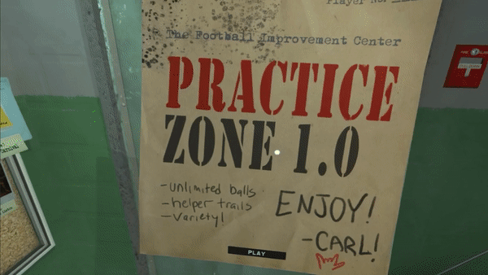
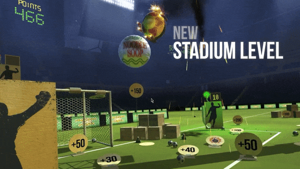
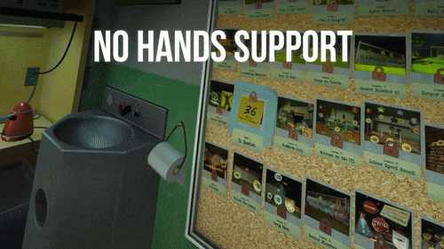

Headmaster is now Available for Oculus rift and htc Vive
Now PC VR users can visit the Football improvement Centre — which is not a prison — to play this bizarre love child of Wii Sports and Portal. We've had great coverage of this surprise launch so far.
- Oculus Blog post with Frame Interactive Founder/CEO Ben Throop
- VRFocus Review of Headmaster on HTC Vive (Score: 8/10)
- Engadget PSVR’s crazy ‘Headmaster’ soccer heading game is on PC
Important Links
- Steam Store: LINK
- Oculus Store: LINK
- Press and Streamers Request a DOWNLOAD KEY for either Oculus Home or Steam
- PC Launch Trailer on Youtube
- Package of 6 new animated GIFs
- Dropbox folder with Screenshots, GIFs, Videos (or 350MB .ZIP archive of same)
New Features on PC VR

Practice Zone 1.0
An oft-requested feature since Headmaster's launch has been a mode where players can work on their heading skills with unlimited chances and no pressure to win. We've built this and also added motion trails to the balls (similar to Angry Birds) so players can hone in on targets.

Stadium Level
Now players can enjoy the peace and solitude of improving inside a vacant stadium. This level will be used at PAX WEST for a tournament put on by Oculus.

NO HANDS SUPPORT (Beta)
NOTE: These are NOT enabled at the start of the game.
Despite the game being called HEADmaster, some Oculus Rift and HTC Vive testers told us they felt weird without hands in VR. We listened... sort of. After thinking about the Football Improvement Centre's strict NO HANDS policy, we created Handball Avoidance Mitts, which "some people" would say are dirty oven mitts wrapped in duct tape.
These are an optional feature that is not enabled by default. We'll be taking feedback and seeing what direction these goofy things should go once the game is live. You can now find instructions for enabling them on the side of the main menu.
Interesting tidbit: The mitts were created in real life and digitized through photogrammetry — the process of taking hundreds of pictures of an object and then processing them to (somewhat) automatically create a model. So we actually own the only two Handball Avoidance Mitts in existence and will be bringing them to PAX.
PARTY MODE (now with 1 Player Support)
- Pass and Play local multiplayer score competition with 11 levels
- We added 1 player support, which is also known as LONELY PARTY MODE.
- Note that at PSVR launch, there was only one PARTY MODE level, so most reviews did not include them. We added 10 levels in a big update in March 2017. These levels are included in the PC version and would be great to touch upon in new reviews.
Difficulty Adjustments
We've swept through the single player levels one more time to ease up tricky spots.
Steam Achievements and Trading Cards
Oculus Achievements
PAX West 2017 - Headmaster Tournament
Headmaster will be featured by Oculus in the Pax West VR Village this year. On Saturday there will be a 3 hour Headmaster tournament. Members of the Frame Interactive team will be there to help run the tournament and give away swag.